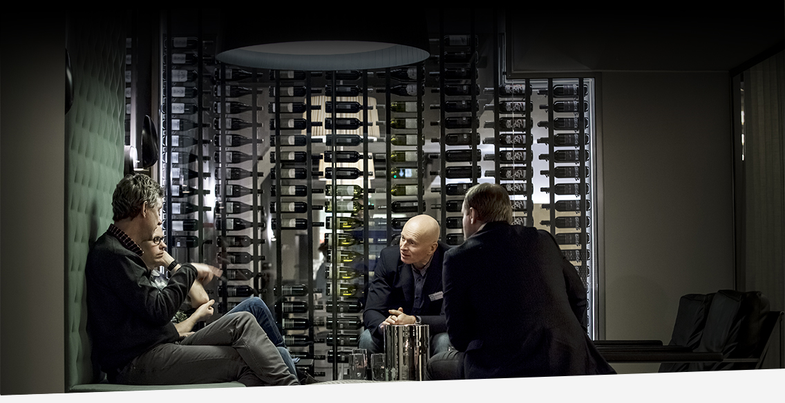
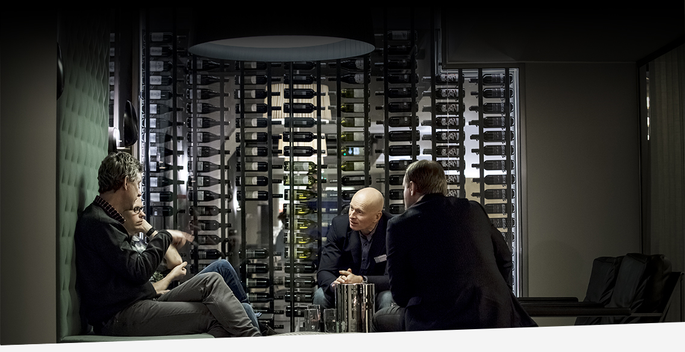

Historisk på Festningen i Halden
Fredriksten Hotell ligger fantastisk til på Fredriksten festnings historiske grunn.
Her er det gjennom århundrer utkjempet viktige slag og sluttført harde forhandlinger.
Hotellet ligger høyt over halden sentrum- som likevel er kun en flott spasertur unna.
Etter full rehabilitering i 2014 har hotellet nå 69 helt nye rom og nye fellesarealer.
Vi har dobbeltrom, enkeltrom og 6 herlige suiter.
Maten lages fra bunnen av med kvalitetsråvarer, og utsikten må bare nytes!
Enten du ønsker å overnatte i flotte, historiske omgivelser, eller en særpreget arena
for ditt møte eller konferanse, er Fredriksten et godt valg.
Velkommen!
Vår filosofi- Ubuntu i alt vi gjør
Vår filosofi kan oppsummeres i begrepet Ubuntu. Ubuntu er en sørafrikansk tenkemåte
som bidrar til gode opplevelser og forbedringsprosesser over hele kloden. Ubuntu er
bindeleddet mellom våre gjester og vi som jobber i vår organisasjon. Ubuntu dreier seg i
det store og hele om å bidra til at samfunnet rundt oss skal kunne forbedres.
Nelson Mandela forklarer Ubuntu slik: "Om en reisende gjennom vårt land stoppes ved
en landsby, ville han ikke måtte spørre etter mat og vann. Med en gang når han stopper,
ville folket gi ham mat og underholde ham. Det er en side av Ubuntu, men ubuntu har mange
sider."
Ubuntu betyr ikke at folk ikke burde tenke på seg selv. Spørsmålet er derfor: "Vil du handle
for at samfunnet rundt deg skal kunne forbedres?"
Ubuntu kan oppsummeres til: En person er en person gjennom andre mennesker"- eller på en
litt annen måte: "We are, because of you".
Fredriksten hotellog våre spisesteder eksisterer på grunn av våre gjester og vi ønsker at
dette skal gjenspeiles i alt vi gjør. Vår misjon er å gi våre gjester gode opplevelser som
gjør at vi fortjener deres lojalitet på livstid. Dette er hele eksistensgrunnlaget vårt og
eksistensbetingelsen til våre virksomhetsområder. En del av vår Ubuntu er også knyttet til
bærekraftig drift og miljøvennlig fangst og råvareproduksjon.
Et historisk tilbakeblikk
Den store mursteinsbygningen som i dag rommer det meste av Fredriksten Hotell omtales
ofte som Kaserna. Byggingen av Kaserna ble påbegynt i 1939, etter tegninger av Arnstein
Arneberg. I 1940 fullførte tyskerne byggingen, etter å ha inntatt Fredriksten festning.
Etter krigen ble bygningen tatt i bruk som kaserne for elever til militær utdanning.
Førkrigstidens underoffiserskole og militære forskolekom begge i gang igjen i 1946. I 1947
vedtok stortinget å etablere et forsvarets gymnas på Fredriksten. i 1970 avla det siste kullet
realskoleeksamen og gymnaset ble avviklet i 1982.
Til gjengjeld ble Hærens forvaltningsskole flyttet til Fredriksten festning i 1983.
Forvaltningsskolene for de tre våpengrener ble så slått sammen til Forsvarets forvaltningsskole,
og skolens utdanningsavdeling lå på Fredriksten frem til høsten 2005. Det store bygget ble
benyttet som kaserne for elever/studentene i hele denne perioden fra krigen og til nedleggelsen
i 2005.
Sommeren 2007 inngikk et privat selskap en avtale med Forsvarsbygg om leie av Kaserna, og den
nedlagte forvaltningsskolens administrasjonsbygg. Hensikten var å drive hotell, konferanse- og
selskapslokale samt kontorutleie. En ny eier overtok driften av lokalene fra 2009. Den gamle
kasernebygningen huset så Halden Vandrehjem- Kaserna, spisesal, bar og kjøkken, cateringvirksomhet
og utstrakt konferanse- og selskapsvirksomhet. Administrasjonsbygningens inneholdt resepsjon,
møterom, konferansefasiliteter og kontorutleie.
I 2013 overtok Fredriksten Hotell driften. Det er blitt investert flere titalls millioner i
totalrehabilitere det gamle kasernebygget. Sommeren 2014 fullføres arbeidet, og Fredriksten
Hotell innvies som et topp moderne hotell med 69 helt nye rom og nye fellesområder.
 
